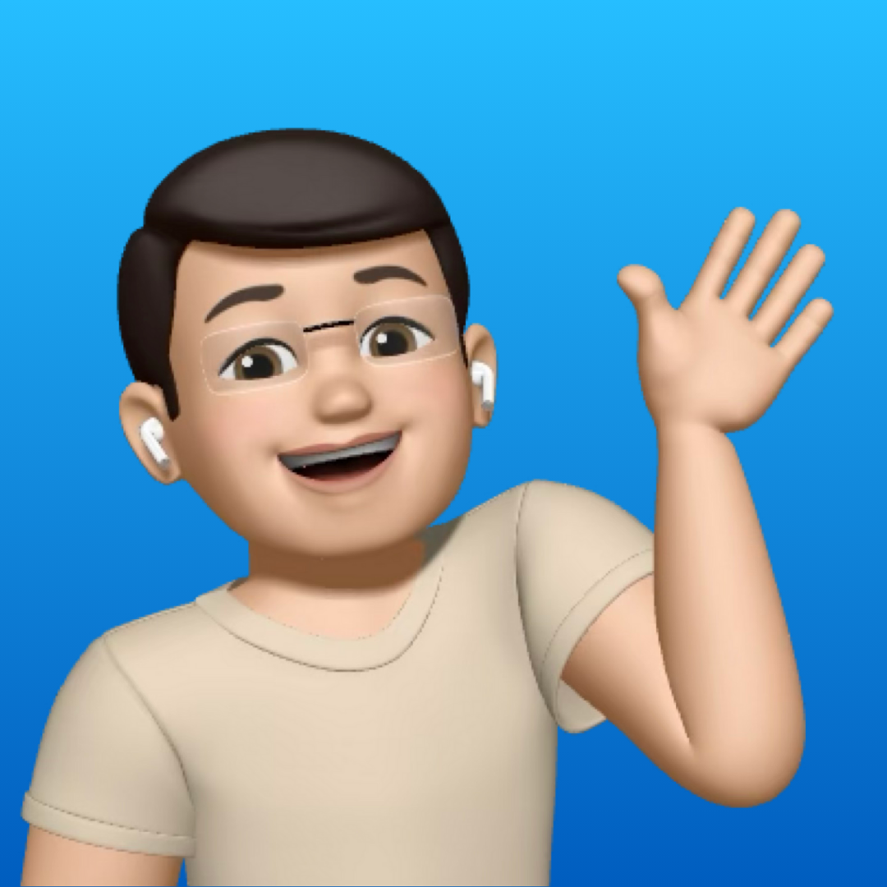

Sou apaixonado por tecnologia e por transformar ideias em produtos digitais úteis e bonitos. Meu foco é desenvolvimento web, com interesse em front-end e integração com back-end. Curto criar interfaces acessíveis, performáticas e fáceis de manter.
Fora do código, curto cultura pop, filmes, séries, música e games — referências que levo para a forma como penso experiências digitais. Estou sempre estudando e evoluindo minhas habilidades com projetos práticos.
 HTML5
HTML5
 CSS3
CSS3
 JavaScript
JavaScript
 React
React
 Node.js
Node.js
Biblioteca virtual com separação de classes, com funcionalidades como controle de acervo e visualização de relatórios para administradores e leitor de livros para usuários comuns.
Aplicativo simples para gerenciamento de tarefas, onde você pode adicionar, marcar como concluídas e gerenciar o status das suas tarefas.
Graduação em Análise e Desenvolvimento de Sistemas na Unichristus, com foco em desenvolvimento de softwares, aplicativos móveis, sistemas web e linguagens como JavaScript, Python e Java. O curso enfatiza raciocínio lógico, resolução de problemas reais, programação para Android, SQL e tecnologias como HTML/CSS e Git, preparando para alta empregabilidade no mercado de TI. Participei de projetos práticos que consolidaram minha base em desenvolvimento full-stack e arquitetura de sistemas.
Durante minha experiência na área de suporte técnico, atuei no atendimento a chamados, realizando instalação e configuração de softwares, manutenção básica de computadores, testes de rede e internet, além de auxiliar na identificação e solução de problemas de hardware. Também prestei suporte a impressoras e periféricos e colaborei no controle de inventário de TI, desenvolvendo habilidades práticas em atendimento ao usuário, infraestrutura tecnológica e gestão de ativos.
 GitHub
GitHub